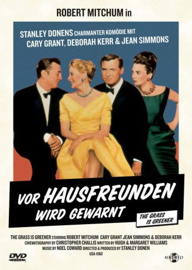

#7273 Vor Hausfreunden wird gewarnt
Alternativ: The Grass Is Greener
 
 IMDB-Wertung: 6.6 / 10
IMDB-Wertung: 6.6 / 10  Metascore: 0
Metascore: 0 
Um ihre der englischen Grundsteuer wegen schwindenden Finanzen aufzubessern, beschließen Schlossherr Victor Rhyall und seine Ehefrau Hilary, das Anwesen zahlenden Touristen zu öffnen. Als der amerikanische Ölmillionär Charles Deacro sich in Hilary verliebt und sie in ihn, hat Victor alle Hände voll zu tun, die Gattin wieder für sich zu gewinnen. Er toleriert ihren Seitensprung, um sie gerade dadurch und seine scheinbare Nonchalance zur Umkehr zu bewegen. Der Millionär räumt das Feld.
Jahr: 1960
Dauer: 104 Minuten
FSK: 12
Land: England Studio: Kinowelt Home EntertainmentTonspuren:
Untertitel: Deutsch,
Auflösung: 1080p (1920x816) Größe: 7823 MB
Genre: Drama, Komödie, Liebe
Regisseur: Stanley Donen
Drehbuch: Anees Bazmee
Soundtrack:
Darsteller:
 Cary Grant als Victor Rhyall, Earl
Cary Grant als Victor Rhyall, Earl Deborah Kerr als Lady Hilary Rhyall
Deborah Kerr als Lady Hilary Rhyall Robert Mitchum als Charles Delacro
Robert Mitchum als Charles Delacro Jean Simmons als Hattie Durant
Jean Simmons als Hattie Durant- Moray Watson als Trevor Sellers, the Butler
- Gwen Watford als Hairdresser's Receptionist , uncredited
- Elisabeth Orion als Fair-Haired Woman , uncredited
Datei: X:\1960\Vor Hausfreunden wird gewarnt (1960, FSK12, 1920x816).mkv seit 11.10.2017
Festplatte: HD 1900-1970
 Es gibt insgesamt 21 Filme in der Gruppe '1960'
Es gibt insgesamt 21 Filme in der Gruppe '1960'